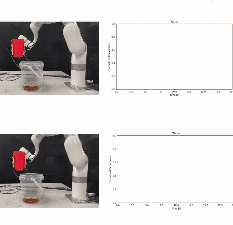

|
Akhil Padmanabha
I am a fourth year Ph.D. student at the Robotics Institute at Carnegie Mellon University, supported by the National Science Foundation Graduate Research Fellowship Program. I am currently interning at Meta Reality Labs as a Research Scientist Intern (Machine Learning for Sensor Systems) with the Motion Sensors team. I will be graduating in August of this year and am actively seeking full-time Research Scientist roles in ML+Wearable Sensing.
I am co-advised by Professor
Zackory Erickson and Professor
Carmel Majidi and
collaborate
with Dr. Sonal Choudhary at University of Pittsburgh Medical Center (UPMC) and
Dr. Arash Mostaghimi at Brigham & Women's Hospital in Boston.
My research is centered around wearable devices, assistive robotics, and robotic sensing.
Email /
CV /
Portfolio /
Google Scholar /
LinkedIn
|
|
|
Bio
After going through several severe health challenges and hospitalizations in high school and switching to homeschooling, where I was not offered honors or AP courses, I surprisingly received admission to UC Berkeley.
I initially chose to study Psychology with the aim of becoming a licensed therapist for chronically-ill adolescents, but later switched majors to Mechanical Engineering, inspired to pursue a career in robotics for social good.
My health challenges have showed me that life should not be taken for granted.
Over the last few years, I've made an effort to live my life to the fullest, pursuing and fighting for exciting and impactful opportunities.
I've accomplished so much so far and I can't wait to do more.
I graduated from UC Berkeley with a B.S. in Mechanical Engineering. During my undergraduate years,
I was fortunate to have the opportunity to work with Professor Sergey Levine at the
Robotic AI & Learning Lab,
Professor Alice Agogino at the
Berkeley Emergent Space Tensegrities Lab,
and Professor Wenzhen Yuan at the
RoboTouch Lab
at Carnegie Mellon University.
In addition to research, I interned at SpaceX for two summers, in Boca Chica, Texas where I led a project to deploy robot dogs for the Starship Launch Operations Team, and in Cape Canaveral, Florida where I upgraded the control systems for
the Of Course I Still Love You droneship for the Falcon 9 Booster Recovery Team.
I additionally interned for robotics startup,
ViaBot, where I did rapid prototyping and mechatronics design for
RUNO. Lastly, I
led the
RoboBears
combat robotics team at UC Berkeley, where I organized the Cal Combat Robotics Competition.
|
|
|
Towards Wearable Interfaces for Robotic Caregiving
Akhil Padmanabha,
Carmel Majidi,
Zackory Erickson
Submitted to ACM/IEEE HRI Workshop, 2023
PDF
|
|

|
RoboCAP: Robotic Classification and Precision Pouring of Diverse Liquids and Granular Media with Capacitive Sensing
Yexin Hu*,
Alexandra Gillespie*,
Akhil Padmanabha,
Kavya Puthuveetil,
Wesley Lewis,
Karan Khokar,
Zackory Erickson
Under Review, 2024
PDF / Video / Website
|

|
SkinGrip: An Adaptive Soft Robotic Manipulator with Capacitive Sensing for Whole-Limb Bathing Assistance
Fukang Liu,
Kavya Puthuveetil,
Akhil Padmanabha,
Karan Khokar,
Zeynep Temel,
Zackory Erickson
Under Review, 2024
PDF / Video / Website
|

|
VoicePilot: Harnessing LLMs as Speech Interfaces for Physically Assistive Robots
Akhil Padmanabha*,
Jessie Yuan*,
Janavi Gupta,
Zulekha Karachiwalla,
Carmel Majidi,
Henny Admoni,
Zackory Erickson
ACM Symposium on User Interface Software and Technology (UIST), 2024
PDF / Video / Website / CMU Article
|
|
|
Towards an LLM-Based Speech Interface for Robot-Assisted Feeding
Jessie Yuan,
Janavi Gupta,
Akhil Padmanabha,
Zulekha Karachiwalla,
Carmel Majidi,
Henny Admoni,
Zackory Erickson
Adjunct Proceedings of the ACM Symposium on User Interface Software and Technology, 2024
PDF / Website
|

|
Independence in the Home: A Wearable Interface for a Person with Quadriplegia to Teleoperate a Mobile Manipulator
Akhil Padmanabha,
Janavi Gupta,
Chen Chen,
Jehan Yang,
Vy Nguyen,
Douglas J. Weber,
Carmel Majidi,
Zackory Erickson
ACM/IEEE Human-Robot Interaction (HRI), 2024 (Best Paper Award Winner)
PDF / Video / Website / CMU Article / Featured in IEEE Spectrum / Pittsburgh Post-Gazette Article / New York Times Feature
|
|
|
A Multimodal Sensing Ring for Quantification of Scratch Intensity
Akhil Padmanabha,
Sonal Choudhary,
Carmel Majidi*,
Zackory Erickson*
Nature Communications Medicine, 2023
Online Version / PDF / CMU Article / Physics World Article / CBC Article
|
|
|
SLURP! Spectroscopy of Liquids Using Robot Pre-Touch Sensing
Nathaniel Hanson*,
Wesley Lewis*,
Kavya Puthuveetil*,
Donelle Furline,
Akhil Padmanabha,
Taskin Padir,
Zackory Erickson
IEEE International Conference on Robotics and Automation (ICRA), 2023
PDF / Video / Website
|

|
HAT: Head-Worn Assistive Teleoperation of Mobile Manipulators
Akhil Padmanabha*,
Qin Wang*,
Daphne Han,
Jashkumar Diyora,
Kriti Kacker,
Hamza Khalid,
Liang-Jung Chen,
Carmel Majidi,
Zackory Erickson
IEEE International Conference on Robotics and Automation (ICRA), 2023
PDF / Video / Website / CMU Article / Featured in TechCrunch
|
|
|
Force-Sensing Tensegrity for Investigating Physical Human-Robot Interaction in Compliant Robotic Systems
Andrew Barkan,
Akhil Padmanabha,
Sala Tiemann,
Albert Lee,
Matthew Kanter,
Yash Agarwal,
Alice Agogino
IEEE International Conference on Robotics and Automation (ICRA), 2021
PDF
|

|
OmniTact: A Multi-Directional High-Resolution Touch Sensor
Akhil Padmanabha,
Frederik Ebert,
Stephen Tian,
Roberto Calandra,
Chelsea Finn,
Sergey Levine
IEEE International Conference on Robotics and Automation (ICRA), 2020
PDF / Video / Website / Blog / TechXplore Article
|
Adapted from template here
|
|
{kind=link}